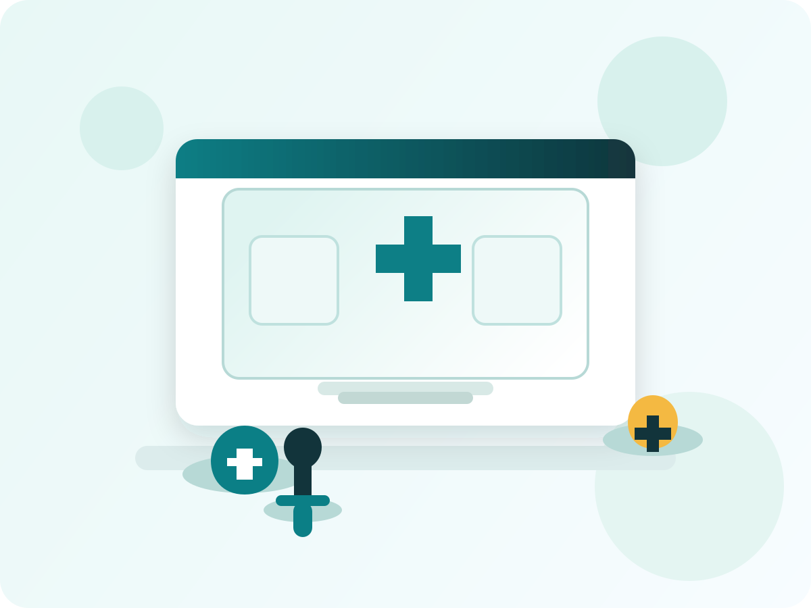

Digital healthcare for local communities
Connecting patients to nearby health centers and hospitals
MedConnect is a modern digital healthcare platform designed to bring medical services closer to people anytime and anywhere. It connects patients, nurses, health centers, and hospitals in one simple experience.
Users can start by choosing their district, then their sector, cell, and health area before seeing the nearby facility that serves them.

MedConnect Services
- Book patient appointments
- Find nearby health facilities
- Start from district and move down to health area
- Reduce long waiting times
Services People Need in Real Life
Emergency Care
Quick contact details and guidance for urgent medical help.
District to Health Area
Patients can search by district, then sector, then the nearest health area.
Hospital Referrals
Clear information when a patient needs specialist treatment.
Appointment Booking
A simple form for requesting a visit to a health center or hospital.
Nursing and Clinical Support
Nurses and clinical staff are shown in one place instead of random names.
Patient Guidance
People can understand where to go before they travel for care.
About Mediconnect
Mediconnect is built to help communities find the right health service faster. It gives people a simple way to start from their district, move to the sector, and reach the nearest care point without confusion.
The platform is meant for everyday people who need clear guidance, simple booking steps, and quick access to nearby support.
How It Works
Choose District
Start with the district where you live or where the patient is located.
Choose Sector
Select the sector to narrow the search to a more local area.
Enter Health Area
Type the health center or health area nearest to the patient.
Submit Request
Fill the rest of the form and send the appointment request.
Find Care
Primary Care
Use for common illnesses, checkups, and basic treatment.
Maternal Care
For pregnancy visits, prenatal checks, and delivery support.
Child Health
For vaccination, growth monitoring, and child illnesses.
Referral Care
For cases that need specialist attention or hospital treatment.
Quick Help
Emergency
Get urgent help fast
If someone has severe bleeding, trouble breathing, chest pain, or loss of consciousness, go to the nearest emergency point immediately.
Before Visit
Bring the basics
Carry your ID, any health card, previous prescription, and a phone number for contact.
Accessibility
Support for everyone
Use the site on phone or computer, with clear labels, large buttons, and simple forms.
Health Tips
Fever and flu
Rest, drink water, and visit a health center if the fever stays high or gets worse.
Child care
Keep vaccinations up to date and seek care quickly if a child is weak, unable to eat, or has trouble breathing.
Pregnancy care
Early antenatal visits help reduce risks and make it easier to detect problems early.
Clean water
Wash hands, drink safe water, and keep food covered to reduce common illness.
Service Categories
How The Booking Flow Works
Choose your district first, then your sector, then the cell or village, and then the health area nearest to you. After that, the form asks for your basic personal details and preferred visit time.
Frequently Asked Questions
What if I do not know my health area?
Enter the nearest area you know, or use the district and sector fields to guide the facility choice.
Can this work for any city or district?
Yes. The examples can be replaced with your local districts, sectors, and facilities.
Do I need to choose a doctor?
No. The booking flow is based on the facility and the care you need, not a doctor selector.
Community Notices
Vaccination day
Community vaccination visits can be added for children and adults when available.
Health outreach
Local health workers can bring services closer to villages and neighborhoods.
Blood donation
Safe blood donation awareness can be shown here as part of community support.
Contact and Support
Emergency: local emergency line
Email: support@mediconnect.example
Working Hours: Monday to Saturday, 8:00 AM - 5:00 PM
Service Area: any city, district, or region